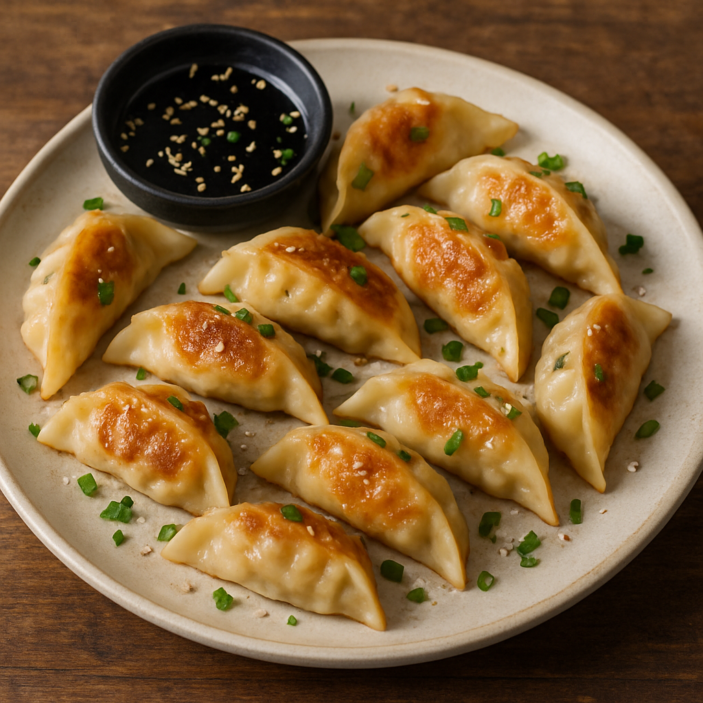

Dumplings

Crispy-bottomed, juicy dumplings filled with seasoned pork and vegetables, served with a savory soy dipping sauce—perfect for sharing or enjoying as a meal.
These pan-fried dumplings, often called gyoza or potstickers, are a beloved dish across Asia and a staple of cozy homemade meals. With a golden, crispy base and a juicy, flavorful filling, they strike the perfect balance between texture and taste. Whether served as a snack, appetizer, or main course, dumplings never fail to impress. The best part? You can make a batch ahead of time and freeze them for quick meals whenever the craving hits.
This version features a classic pork and cabbage filling enhanced with garlic, ginger, soy sauce, and sesame oil. The dumplings are first seared to create that iconic crispy bottom, then gently steamed in the same pan to cook the filling through—no need for special equipment. Paired with a simple dipping sauce, these dumplings are incredibly satisfying and fun to make, especially with friends or family.
Ingredients (Makes about 24 dumplings):
For the filling:
- 250g ground pork
- 1 cup napa cabbage, finely chopped
- 2 green onions, finely chopped
- 2 garlic cloves, minced
- 1 teaspoon fresh ginger, grated
- 1 teaspoon sesame oil
- 1/2 teaspoon salt
- 1/4 teaspoon ground white pepper (optional)
For the dumplings:
- 24 round dumpling wrappers (gyoza wrappers)
- 2 tablespoons vegetable oil (for frying)
- 1/4 cup water (for steaming)
For the dipping sauce:
- 2 tablespoons soy sauce
- 1 tablespoon rice vinegar
- 1/2 teaspoon sesame oil
- ptional: chili oil, sliced scallions, or sesame seeds
Instructions:
- Make the filling:
- In a large bowl, mix the ground pork, cabbage, green onions, garlic, ginger, soy sauce, sesame oil, salt, and pepper until well combined.
- Assemble the dumplings:
- Place a wrapper in the palm of your hand. Add about 1 teaspoon of filling to the center. Wet the edge with a little water, fold the wrapper in half, and pinch the edges to seal, pleating if desired.
- Cook the dumplings:
- Heat 1 tablespoon of oil in a large non-stick skillet over medium heat. Place dumplings flat-side down in a single layer. Cook for 2–3 minutes until the bottoms are golden brown.
- Steam the dumplings:
- Add 1/4 cup of water to the pan and immediately cover with a lid. Let steam for about 5–6 minutes until the water evaporates and the dumplings are cooked through.
- Serve:
- Mix the dipping sauce ingredients in a small bowl. Serve the hot dumplings immediately with the sauce on the side.
Back